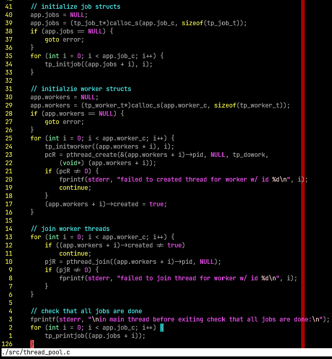
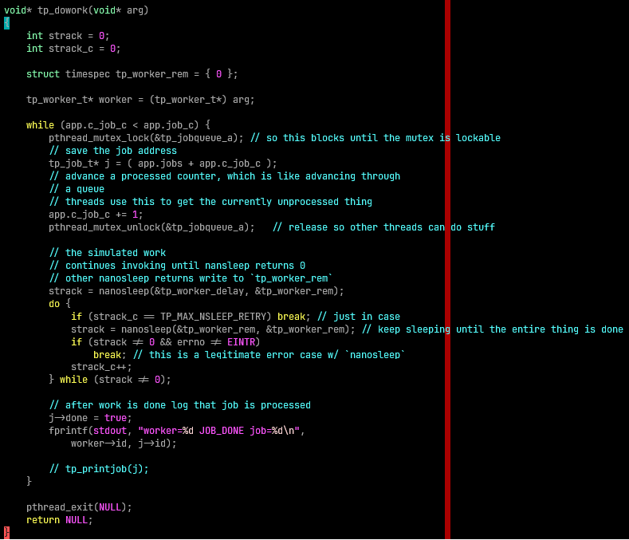

Will Otterbein, A01372608
main
The main function first processes the arguments strictly rejecting any invalid argument count (n != 3), and parsing the two arguments as integers.
Then main sets up the application state. To make things easy, jobs & workers
are assigned types, tp_job_t & tp_worker_t respectively, and the application
state is grouped under the tp_state_t struct instance app. Heap memory
is allocated for all the jobs & workers, as per the inputs of the program, &
written to app.workers & app.jobs. The inital worker & job counts are also
written to the application state as app.worker_c & app.job_c. The completed
job counter, app.c_job_c , is set to 0.
For each job, tp_job_t structs are initialized w/ ascending id
number & the other fields are zeroed as per tp_initjob, written the the
corresponding index of app.jobs.
For each worker, tp_worker_t structs are initialized w/ ascending id numbers
& the other fields are initialized as per tp_initworker. Additionally,
pthread_create is invoked for the thread, where the routine is specified as
tp_dowork & to that routine the current job struct is passed. pthread_create
writes the pid to the structs pid field. If pthread_create fails, we print this
& the created field of the tp_worker_t instance remains false, or 0.
Now that the workers are running, main has to wait for all the workers to finish.
The app.workers memory is iterated over, & pthread_join is called for each
worker (unless the worker created field is set to false). If there's an
error joining the thread, we print this.
Finally we just have a simple sanity check to log all the jobs & confirm that
their state is set to done. Also the heap memory allocated for app.workers &
app.jobs is freed. In the regular case, the exit code is 0.
Like my other labs, error conditions jump to an error label, which also
frees the app.workers & app.jobs memory (if the pointer is not the
default uninitialized value of NULL) and the program returns a non zero
exit code.
tp_dowork
This function is the thread routine.
For its argument it accepts (expects) a pointer to the tp_worker_t type for
that worker (in a more complicated application this might be more useful, I
just use it to get that workers ID for the log message).
The processing logic begins with the while loop. The immediate condition
check against the job count, app.job_c, & processed job offset, app.c_job_c,
stops the threads from processing after the entire queue of jobs has been
processed.
Regarding the processing, to ensure mutual exclusion while the threads are
dequeuing jobs, the shared mutex tp_jobqueue_a must be acquired. If this cannot
be done, pthread_mutex_lock takes care of blocking the calling thread for us.
Otherwise the lock is acquired, the address of the current job to process is
saved by the acquiring thread using the processed job offset, who is also responsible to advance the processed
job offset (which is effectively like dequeuing the job).
The method initializes a tp_worker_rem timespec struct instance, which
is used to write nanosleep remainder time in order that sleep be reattempted
until the entire duration of 2 seconds has elapsed.
Once the fake work (nanosleep) is complete, the thread exits.
Sleep retries a maximum of 10 times before the retry loop is broken out of (defined by
TP_MAX_NSLEEP_RETRY).